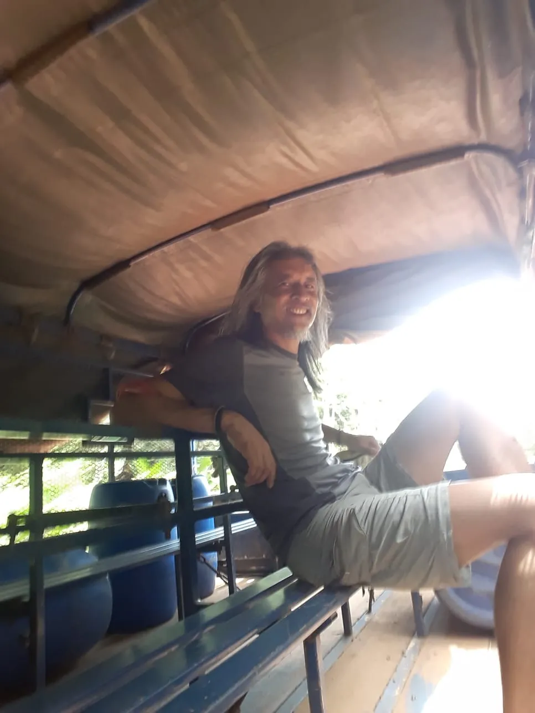
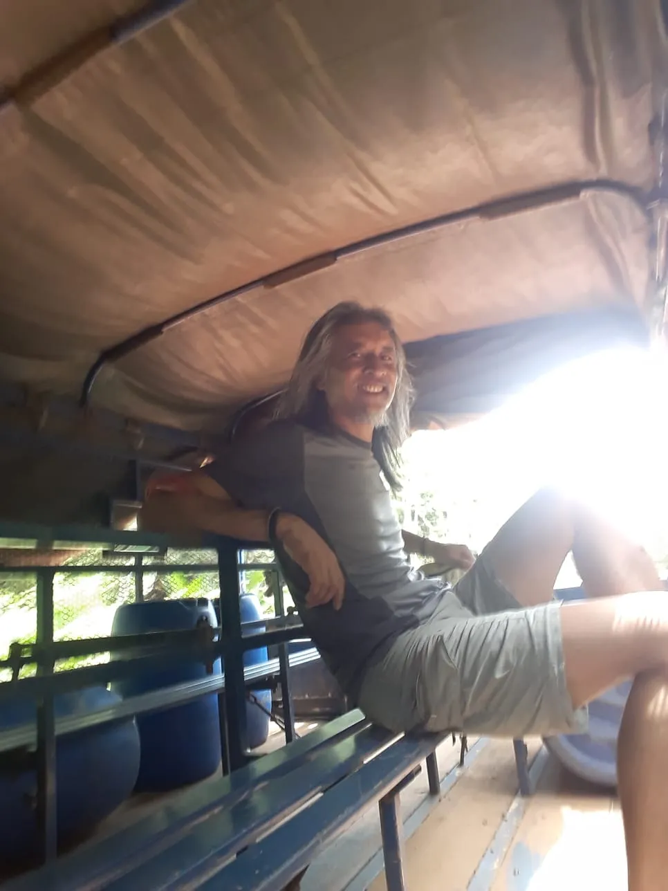
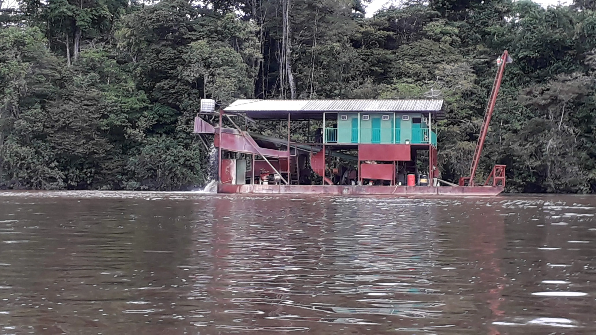
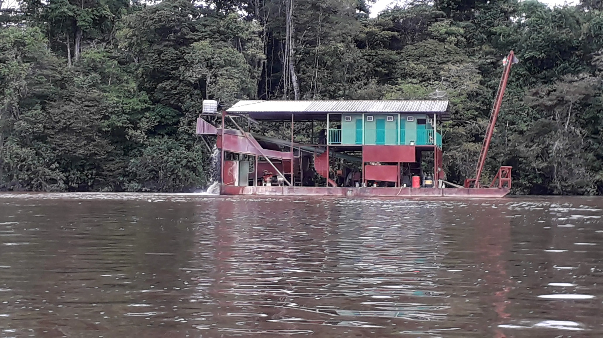

Saviez-vous que la France avait une frontière commune avec le Brésil ? Et oui, et le département qui a ce privilège est frontalier avec le nord du Brésil, l'est du Suriname, et est bordé par l'océan Atlantique sur le littoral côté est: c'est La Guyane. Le fleuve Maroni est sa frontière avec le Surinam à l'Ouest, et son pendant à l'Est est le fleuve Oyapock qui le sépare du Brésil.


Une riche biodiversité
Bon, on ne vient pas en Guyane pour son eau turquoise et ses lagons. Mais sa biodiversité est telle qu'en son sein il existe le Parc Amazonien qui vise à préserver sa faune et sa flore.
Petit échantillon de la faune


La flore
La flore tout mme la faune est luxuriante, partout en amazone on peut observer des fleurs, des arbres. On a l'impréssion que tout n'est que vert mais en observant on finit par en distinguer les différentes plantes et arbres.
En terme de santé, le territoire Guyanais sur sa partie littorale comprend au nord l'hôpital de Saint Laurent du Maroni, plus au sud celui de Kourou, ensuite celui de Cayenne. Dans les communes ou à l'intérieur de la forêt amazonienne, il existe un maillage de CDPS (dispensaire qui assure la plupart des soins en partant de la médecine de ville à la pédiatrie, le suivi des grossesses jusqu'aux accouchements...).

La Guyane moderne
Au cours de mon passage en Guyane, j'ai rencontré 2 mondes totalement opposés : une Guyane résolument moderne (notamment Cayenne et Kourou), et une Guyane sauvage, où l'accès ne se fait que par pirogue et/ou avion...
Kourou : Ariane


Le 101e tir d’Ariane V, un moment magique à vivre ! Une lueur dans la nuit, une boule de feu qui monte au ciel et aprés un petit moment, les vibrations sous nos pieds, l'odeur et le bruit des moteurs qui nous parvient. Quel contraste avec le pays que je découvrirai ensuite.
Moyens de locomotion
Suivant l'endroit ou vous devez vous déplacer, les transports peuvent être assez exotiques... Le long du littoral, pas de problemes particuliers hormi le fait que les transports en commun sont peu nombreux et il vaut mieux privilégier les navettes privées pour se rendre dans le nord ou le sud du département. J'aurai même été pris en stop dans le panier à salade et même un pirogue des gendarmes. A part cela ne reste que les pirogues pour rallier les villages disséminés le long du fleuve Surinam à l'Ouest ou Oyapoque a l'Est. Quel plaisir ou quel enfer de faire de la pirogue-stop et ne pas savoir quand se fera le départ et encore moins qand se fera l'arrivée. La notion de temps n'est pas la même la bas et il faut en plus tenir compte de la saison des pluies ou de la saison sèche.
La pirogue, c'est trop classe les premières fois, mais au bout de quelques voyages on commence à en entrevoir les innvénients surtout quand elles ne sont pas couvertes...à savoir pluies, soleil et chaleur. Mais il se fait toujours un arret le long des épiceries dédiées à l'orpaillage le long des rives du Surinam(pays)


 

L'orpaillage
Véritable fléau en Guyane, l'orpaillage. Il est concentré sur sur le Maroni essentiellement. En navigant sur le fleuve c'est des dizaines et des dizaines de barges d'orpaillage, de camps d'orpailleurs que l'on peut rencontrer, on les voit au milieu de la foret quand on la survole en avion. Le fleuve porte les stigmates qu'on aperçoit sur les berges en saison sèche tellemnt la végétation en est détruite à cause du mercure utilisé pour extraire l'or. Ici en métropole on a les magasins "tout dédié" au bricolage, en Guyane c'est "tout dédié" à l'orpaillage. Et rien n'est caché, ce sont les boutiques qui ont pignon sur rue...heu je veux dire pignon sur le fleuve
 
